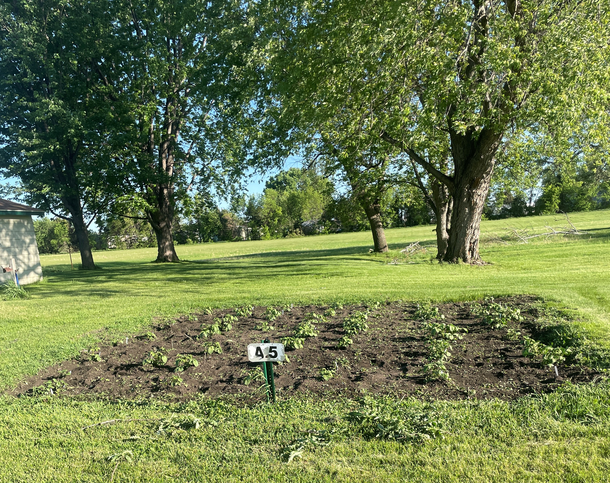

Hello, We are the Cooking and Gardening Club for Dakota State University. We are a club
that tries to show others on campus ways to cook. We try to get our memebers to engage in some form of
gardening.
Some contact info:
President Daniel
Discord: Mocha#3136
Vice-President: Maxwell
Discord: DashinRed#4210
Treasuer: Lucas
Discord: Suka#7777
Event Coordinator: Tara
Discord: ReighFye#4646
Advisor: Tom
Discord: halverto#2740
Our Club Discord
Our Club Twitter
Welcome to the Gardening part of our club.
Welcome to the Cooking part of our club.
Our club has helped out our community here at DSU through a multitude of projects.
This last summer we have given our time to take care of a plot in Madison's Community Gardens where we planted potatoes. Some will be donated to the food bank in Madison and while the rest will be donated to Sodexo.